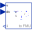
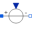

GenerationOfFMUsExample to demonstrate variants to generate FMUs (Functional Mock-up Units) |
|
Diagram
{kind=link}
Information
This information is part of the Modelica Standard Library maintained by the Modelica Association.
This example demonstrates how to generate an input/output block (e.g. in form of an FMU - Functional Mock-up Unit) from various Electrical components. The goal is to export such an input/output block from Modelica and import it in another modeling environment. The essential issue is that before exporting it must be known in which way the component is utilized in the target environment. Depending on the target usage, different connector variables need to be in the interface with either input or output causality. Note, this example model can be used to test the FMU export/import of a Modelica tool. Just export the components marked in the icons as "toFMU" as FMUs and import them back. The models should then still work and give the same results as a pure Modelica model.
Connecting two capacitors
The first part (DirectCapacitor, InverseCapacitor)
demonstrates how to export two capacitors and connect them
together in a target system. This requires that one of the capacitors
(here: DirectCapacitor)
is defined to have states and the voltage and
derivative of voltage are provided in the interface.
The other capacitor (here: InverseCapacitor) requires current according
to the provided input voltage and derivative of voltage.
Connecting a resistance element between two capacitors
The second part (Resistor2) demonstrates how to export a resistance element
that needs only voltages for its resistance law and connect this
resistance law in a target system between two capacitors.
Connecting two inductors
The third part (DirectInductor, InverseInductor)
demonstrates how to export two inductors and connect them
together in a target system. This requires that one of the inductors
(here: DirectInductor)
is defined to have states and the current and
derivative of current are provided in the interface.
The other inductor (here: InverseInductor) requires voltage according
to the provided input current and derivative of current.
Connecting a conductance element between two inductors
The fourth part (Conductor4) demonstrates how to export a conductance element
that needs only currents for its conductance law and connect this
conductance law in a target system between two inductors.
Bear in mind that separating physical components and connecting them via adaptor signals requires to place appropriate ground components to define electric potential within the subcircuits.
Components (22)
| sine12 |
Type: Sine |
|
|---|---|---|
| directCapacitor1 |
Type: DirectCapacitor |
|
|  | inverseCapacitor1 |
Type: InverseCapacitor |
| resistor2 |
Type: Resistor |
|
| capacitor2a |
Type: Capacitor |
|
| current2 |
Type: SignalCurrent |
|
| currentToVoltage2a | ||
| capacitor2b |
Type: Capacitor |
|
| currentToVoltage2b | ||
| ground2a |
Type: Ground |
|
| ground3b |
Type: Ground |
|
| sine34 |
Type: Sine |
|
| directInductor3 |
Type: DirectInductor |
|
| inverseInductor3 |
Type: InverseInductor |
|
|  | voltage4 |
Type: SignalVoltage |
| ground4a |
Type: Ground |
|
| inductor4a |
Type: Inductor |
|
| voltageToCurrent4a | ||
| conductor4 |
Type: Conductor |
|
| voltageToCurrent4b | ||
| inductor4b |
Type: Inductor |
|
| ground4b |
Type: Ground |